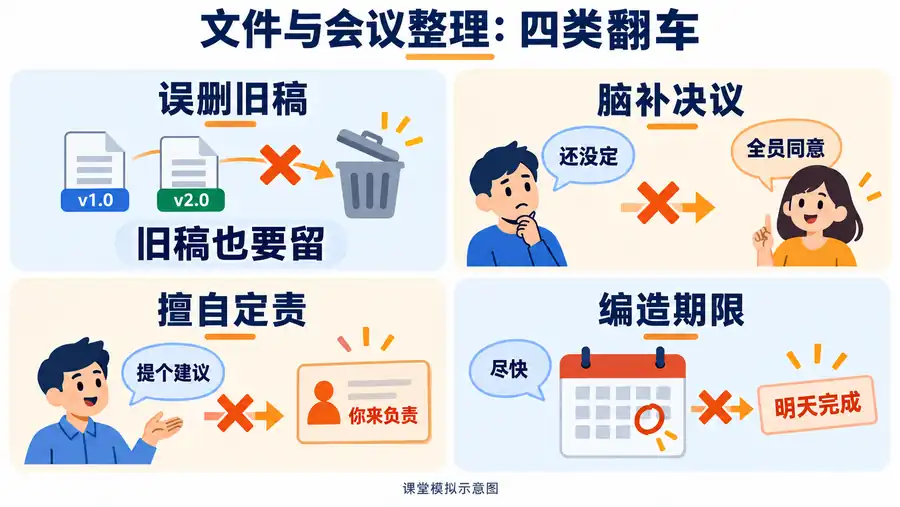
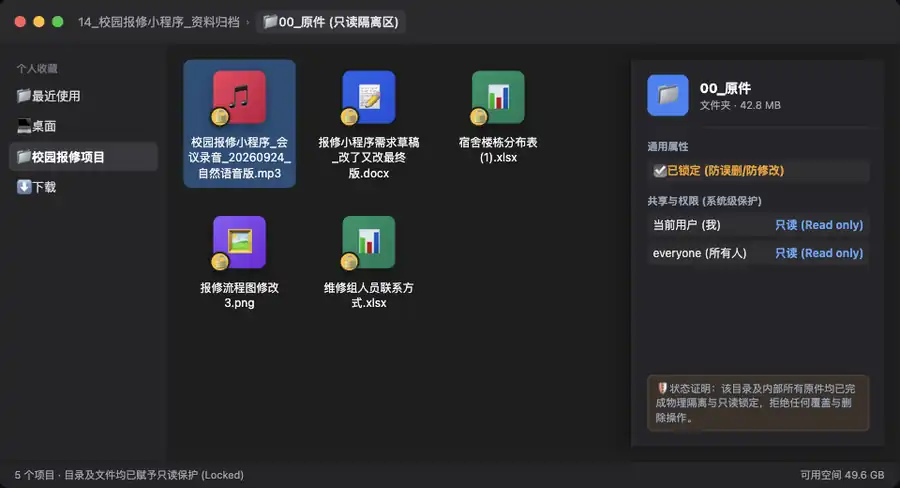
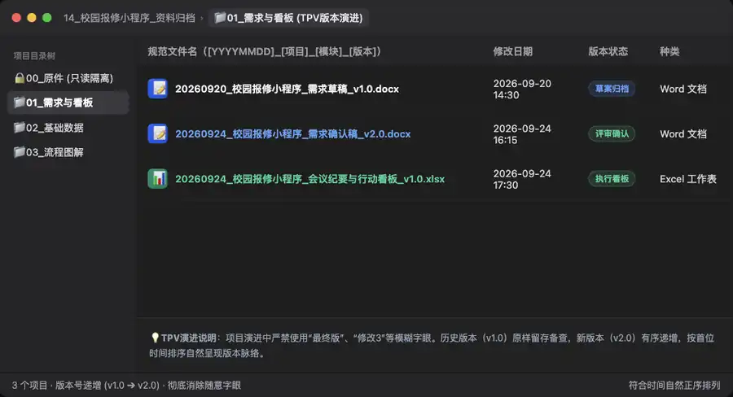

第三章｜AI 办公与数据处理 · 第 14 次课 · 2 学时
文件管理与会议记录
能用图不用字，能看视频少看文。用 AI 高效归档散乱文件，从口语速记中提炼出责任到人、截止期明确、绝无脑补的行动看板。
00 知识回顾
- 上节留存：PPT 自动生成的本质是“结构化大纲（Markdown）向原生母版（PPTX）的矢量映射”，绝不轻信死图。
- 本节攻坚：职场日常两项最高频基本功——文件 TPV 规范归档与会议录音速记提炼（FDA 模型），彻底消灭“最终版”与“废话散文纪要”。
01 任务预告
今天要完成什么？
- 最终作品：一份规范的项目文件归档索引、会议行动项看板与 AI 过程记录留痕（含分类规则、责任人、截止期、状态标记与纠偏记录）。
- 交作业文件名：
14_校园报修小程序_资料归档与会议看板_姓名.xlsx - 合格标准（看这5条）：
- 包含
文件索引目录、会议行动看板与AI过程记录三个独立工作表； - 建立“日期-项目-分类-版本”（TPV）标准命名规范，彻底剔除“最终版”、“修改3”等随意字眼；
- 从会议速记中提炼行动项，每项必须明确【事项描述、责任人、完成期限、验收标准】；
- 遇到未敲定、发言模糊事项，严格标注“待定核实”，绝不主观推测或强行定责；
- 设立专门的
AI过程记录工作表完整留痕（Prompt、初始输出与人工纠偏说明），完成本地目录只读物理隔离与防误删实操验证，重新打开文件排版无损。
- 包含
避坑预警：借助 AI 整理时的 4 类典型翻车

| 典型翻车现象 | 产生原因分析 | 核心防御提示词 | 我们的正确操作 |
|---|---|---|---|
| ❌ 1. 脑补未决事项 | 口头探讨被 AI 当成正式决议 | “区分讨论观点与最终决议，未达成一致的仅列入待定议题。” |
核对会议结尾结论，未敲定者坚决不写进决议 |
| ❌ 2. 强行指派责任人 | 谁发言积极就把任务安在谁头上 | “责任人必须依原文明确指派；未指派的统一填‘待确认’，严禁推测。” |
责任人列出现模糊处标黄，线下交组织者确认 |
| ❌ 3. 编造截止时间 | 把“下周搞一下”脑补为具体几月几日 | “严格摘录原文时间节点；未指明确切日期的，一律标记‘待定’。” |
将“尽快”、“下周”等口语统一提取为待定 |
| ❌ 4. 物理误删旧稿 | AI 认为相似文件无用，直接覆盖或删除 | “历史版本完整保留并按版本号归档，严禁直接覆盖或删除源文件。” |
建立 00_原件 只读隔离目录，杜绝误覆盖 |
02 基础概念
概念 1｜现代文件命名法则：TPV 规范体系
摒弃个人随意命名，采用团队协作与数字资产管理的高效命名法则——TPV 规范体系（时间 Time - 项目 Project - 版本 Version）：
标准公式：[YYYYMMDD]_[项目名]_[模块分类]_[版本号].[扩展名]
❌ 错误命名：迎新晚会策划案_改了又改最终终稿(2).docx
✅ 规范命名：20260924_迎新晚会_策划方案_v2.0_送审版.docx
- T（Time，时间维度）：首位统一采用
YYYYMMDD（如20260924），确保在任何操作系统下按名称正序排列时，均能自动按真实时间线顺序呈现； - P（Project / Topic，项目与模块）：指明所属项目与具体业务模块（如
校园报修小程序_需求确认稿、迎新晚会_赞助名单）； - V（Version / Status，版本与状态）：采用规范数字版本号
v1.0、v2.0（小修补用v1.1，里程碑用v2.0），彻底消灭“最终版”、“最新版”、“修改稿”等无法回溯的混乱字眼。
概念 2｜会议纪要三层过滤模型：FDA
拒绝录音转写原文大段搬家，使用三层漏斗严格脱水过滤：
F 事实（Fact） ➔ 讨论了什么背景与现状（保留争议双方观点）
│
D 决议（Decision）➔ 领导当场定案了什么（未定案项一律归入待定库）
│
A 行动（Action） ➔ 散会后谁该干什么（责任人 + 截止时限 + 具象验收物）
在部门会议中，主管随口说：“这个展板主视觉颜色偏暗，小李你平时审美不错，可以多留心看看。”AI 提炼纪要写道：“【行动项】小李负责于明天完成展板重新设计并定稿。”这样归纳合理吗？为什么？
点击展开查看参考分析
极不合理！ 这是典型的“口语闲聊当工作指派”和“凭空捏造时限”：
- 性质混淆：主管仅是探讨审美，并未正式立项或指定小李负责；
- 凭空捏造：原文无“明天完成”和“重新设计”，纯属 AI 幻觉；
- 正确做法：写入讨论要点：“大家讨论展板色调偏暗，建议调整”；若需小李跟进，必须由主管明确指派后方可录入行动项。
概念 3｜基于 SMART 原则的课堂精简自检三要素
在管理学与目标制定中，国际通用权威的 SMART 原则（Specific 目标具体、Measurable 成果可衡量、Achievable 步骤切实可达成、Relevant 与项目强相关、Time-bound 有严格截止时限，详见权威 CDC 培训与目标设计指南）。
针对日常会议纪要与行动看板整理中最容易缺失、最容易产生推诿扯皮的三大痛点漏洞，本课提炼出面向实操的“极简三要素自检项”：
- 责任具体到人（对应 Specific）：必须指派到具体责任人姓名，未指派统一标注“待确认”，严禁推测或写泛化的“各部门推进”；
- 交付可衡量验收（对应 Measurable）：必须有明确的交付物形态（如具体的表格、文档、清单、测试报告），拒绝“继续跟进”、“认真落实”等抽象空话；
- 截止有明确时限（对应 Time-bound）：必须精确到具体工作日或截止时间点，未敲定必须明确标注“待定”，严禁模糊写“尽快”、“下周前”。
03 核心案例
案例剖析：真实项目复盘——某数字化团队“AI 纪要翻车事故”反思与治理 SOP
在某高校数字化校园协作项目的推进复盘中，项目团队总结了一次典型的“AI 纪要事故”教训：
“项目助理将 1 小时的会议录音转写文本直接发给 AI 总结，未做人工核验与防脑补约束，便将生成的纪要发到项目协同群。结果引发跨部门严重异议：
- 把未决讨论当成正式决议：关于是否在第一阶段增加在线支付功能，后勤与研发激烈讨论未定，AI 竟总结为‘双方一致同意上线在线支付’；
- 擅自定责抓壮丁：会上后勤老师随口说‘小陈对各楼栋比较熟悉’，AI 竟在纪要里写‘【行动项】小陈周四前完成全校 32 栋宿舍现场摸排’；
- 凭空捏造交付时限：客户提到‘等测试版出来再定上线时间’，AI 却把发言中提到的‘9月25日确认需求’错判为‘9月25日系统正式上线’，险些导致重大交付事故。”
📺 精选实战视频推荐（能看视频，少看文字！）
通过优秀 UP 主的直观演示，在 3~5 分钟内快速掌握文件归档与会议 AI 提取精髓（经教学核验，各外链均稳定有效）：
视频封面请在下方原作者页面查看。
视频封面请在下方原作者页面查看。
视频封面请在下方原作者页面查看。
📸 真实系统资产治理截图示范
项目团队坚持的两项核心文件管理硬规则：

00_原件 目录，将原始录音、初始需求草稿等全部纳入；系统属性明确勾选【已锁定】并赋予【只读 (Read only)】权限，杜绝任何覆盖与误删风险。
YYYYMMDD_项目名_模块_版本号 清晰展示版本递增（v1.0 ➔ v2.0），保留完整历史版本，彻底告别“最终版”混乱。提示词武器：防脑补防御性会议提炼模板
复制以下提示词给 WorkBuddy 或通用大模型：
你是一名严谨的行政督办专家。请分析以下会议口语速记，输出结构化纪要表格，必须严格遵守以下红线：
1. 【议题与事实】按讨论主题归纳事实，如实保留各方分歧；
2. 【决议定案】仅记录形成明确共识的结论；未决事项放入“待跟进事项”，严禁写成决议；
3. 【行动项看板】表格输出：任务编号、核心事项、所属模块、责任人、截止时间、验收标准；
4. 【红线铁律】责任人必须在原文中有明确指派，未指派统一填“待确认”；截止时间未明确具体日期的统一填“待定”，严禁凭空臆造时间或指派人员！
💡 从认知到动手的过渡： 掌握了“TPV 规范命名”、“FDA 漏斗过滤”与“防脑补提示词”，接下来我们在【04 实践任务】中实操真实项目《校园报修小程序》的需求会议材料规整！
04 实践任务｜以《校园报修小程序》为实战，制作文件索引与会议行动看板
真实业务场景与练习材料
你担任后勤处数字化项目组助理。今天（2026年9月24日），项目组召开了“校园报修小程序（第一阶段）”需求与进度评审会。 桌面上堆放着 4 个前期散乱命名的项目资料，群里刚刚发来了本次会议的录音原件。 你的任务是：从一段纯音频出发，提取文本、人工核验、提炼行动看板，并最终为整个项目资产建立规范的 TPV 归档与只读物理隔离！
📌 实训素材获取途径： 本课实训仅提供真实会议音频原件（
校园报修小程序_会议录音_20260924_自然语音版.mp3），已统一上传至 【学习通 ➔ AIGC应用与实践 ➔ 资料】。请同学们先在学习通下载音频，通过 AI 转写并自主核验！
🧭 动手前必读：为什么实训里会有两个提示词？到底怎么做？
很多同学可能会疑惑：“为什么步骤里突然出现两个提示词？我到底该怎么跟 AI 互动？” 其实，今天我们要帮项目组解决两个完全不同维度的实际痛点，就像通关打怪，分两大战役进行：
| 战役阶段 | 我们手头的痛点 | 我们派给 AI 的任务 | 对应的提示词武器 | 最终输出成果 |
|---|---|---|---|---|
| 【战役一·会议篇】 （步骤 1 ➔ 步骤 3） |
手里只有一段吵吵嚷嚷的会议录音，大段口语无法直接指派工作 | 让 AI 扮演行政督办专家，过滤口语废话，把讨论提炼为责任清晰的表格 | 【提示词 1】 防脑补会议提炼模板 |
输出 《会议行动看板》 （任务编号、责任人、截止时间、验收标准） |
| 【战役二·文件篇】 （步骤 4） |
会议开完了，桌面上堆满 4 个旧草稿 + 1 个录音原件 + 刚才新出炉的纪要，名字杂乱无章 | 让 AI 切换身份，扮演数字资产管理专家，按 TPV 规范重命名并规划隔离目录 | 【提示词 2】 TPV 资产规范规划模板 |
输出 《文件索引目录》 （原文件名、TPV 新文件名、建议归档路径） |
| 【战役三·实操篇】 （步骤 5 ➔ 步骤 7） |
需要交付可考核的实训成果，并在电脑中真正建立受保护的项目文件夹 | 打开 WPS 把两张表存入同一个 Excel，并在电脑里真实建立只读原件目录 | 人工落盘操作 | 交付 14_..._姓名.xlsx（含 3 个工作表）并在本地建立受保护目录 |
协同工具分工
- AI 协同软件（WorkBuddy / 语音转写工具）：
- 语音转文字：将会议录音原件自动转写为初始速记文本；
- 智能提炼：针对核验后的速记，运用 FDA 模型防御性提取核心决议与行动看板；
- 资产规划：统一制定符合 TPV 规范的重命名方案与“00_原件物理隔离”归档目录树。
- 专业软件（WPS 表格 / Excel）： 承接 AI 结构化输出结果，构建包含【文件索引目录】、【会议行动看板】与【AI过程记录】的完整实训工作簿，标黄待定项，完成交付落盘。
- 操作系统文件管理器（Windows 资源管理器 / macOS 访达）： 实际创建归档目录树，对原始数据实施系统级“只读保护”并完成防误删安全验证。
第 1 步｜从学习通下载音频，用 AI 语音转文字（提取速记草稿）
- 从学习通下载音频原件
校园报修小程序_会议录音_20260924_自然语音版.mp3； - 打开具备语音识别能力的 AI 协同工具（如 WorkBuddy 语音转文字功能、或飞书妙记、通义听悟、微信语音输入等转写工具）；
- 导入该音频文件，启动自动语音识别（ASR），导出初始的会议文字速记草稿。
第 2 步｜对照音频核验，人工排查 3 个高危听录陷阱
AI 语音转写不可避免地存在同音词混淆、专有名词识别不准、说话人切分错误等缺陷。请对照音频原件，重点回听并校准以下 3 个关键高危陷阱：
- 陷阱 1（专有名词与功能状态）：
- 检查状态机：核对是否正确识别为“待受理、处理中、已完成”3 个状态；
- 检查否定句：核实是否将“旧稿里的待评价取消”、“在线评价和支付都不放在第一阶段”准确识别，防止漏词导致语义反转。
- 陷阱 2（时间反转高危陷阱）：
- 重点回听 01:00 左右对话：客户明确表示“九月二十五日改成需求清单确认日，不是上线日。先给我们测试版，正式上线等测试通过再定”。
- 确保速记稿中绝不能将“9月25日”误记为“上线日”。
- 陷阱 3（责任人与时间节点）：
- 回听结尾项目经理的复述，校对产品经理（9月25日发需求清单）、客户（9月28日发楼栋与维修组）、项目经理（9月30日确认测试负责人）的对应关系。
校准完成后，保存为一份干净可信的《校准版会议速记文本》。
第 3 步｜【战役一·会议篇】发【提示词 1】给 AI，生成《会议行动看板》
怎么做？保姆级 3 步操作：
- 复制提示词：点击下方代码框的【复制】按钮；
- 填入你的速记：在提示词中找到
[请在此处粘贴你在第2步中核验校准后的会议速记文本]，替换为你第 2 步校准好的文字； - 发送给 AI：发给 WorkBuddy（或大模型），AI 会自动按 FDA 模型吐出【核心决议】与【行动项看板】表格；
- 快速检查：核对 AI 有没有擅自脑补——“正式上线日期”必须写“待定”，责任人必须依原文明确填写！先留存该表格备用。
请分析以下我已人工核验校准的《校园报修小程序第一阶段评审会》会议速记，运用 FDA 模型提炼出结构化的【核心决议】与【行动项看板（Action Items）】表格。
【会议速记文本】：
[请在此处粘贴你在第2步中核验校准后的会议速记文本]
要求：
1. 提取【核心决议】：明确写出第一阶段确认的 3 个状态（待受理、处理中、已完成），以及明确剔除的功能（取消待评价、暂不开发在线评价与支付）；
2. 提取【行动项看板表格】：字段包含：任务编号、核心事项、所属模块、责任人、截止时间、验收标准；
3. 【高危陷阱防范铁律】：
- 原先提过的“9月25日上线”已被客户明确否定！9月25日仅为“需求清单确认日”；
- “正式上线日期”必须明确标注为“待定（测试通过后再定）”，严禁擅自捏造上线日期！
- 责任人必须依据会议复述明确填写（产品经理、客户后勤处、项目经理），严禁推测分配。
第 4 步｜【战役二·文件篇】发【提示词 2】给 AI，生成 6 项资产的《文件索引目录》
为什么换提示词？ 刚才第 3 步我们把会议内容搞定了，手里多了一份《会议纪要与看板》。 现在桌面上散落着 6 份重要资产（4 个前期旧草稿 + 1 个音频原件 + 刚才第 3 步新出炉的会议看板）。 我们需要让 AI 切换身份，从“行政记录员”变成**“数字资产管理专家”**，帮我们制定统一规范的重命名方案和目录树！
怎么做？极简 2 步操作：
- 直接复制提示词：点击下方代码框【复制】按钮（提示词内已经帮你把这 6 个文件的信息全部写全了，你无需修改任何内容！）；
- 直接发给 AI：在当前对话框（或新开对话）直接发送。AI 会自动根据 TPV 规则，输出一张结构规范的《文件索引目录》表格与目录树结构。
你是一名资深数字资产管理专家。请根据以下《校园报修小程序》项目的所有交付资产，制定一套符合“日期-项目-分类-版本”（TPV）规范的重命名方案与只读物理隔离目录树。
待归档资产清单：
1. 报修小程序需求草稿_改了又改最终版.docx（创建于 2026年9月20日）
2. 宿舍楼栋分布表 (1).xlsx（创建于 2026年9月22日）
3. 报修流程图修改3.png（创建于 2026年9月23日）
4. 维修组人员联系方式.xlsx（创建于 2026年9月24日）
5. 校园报修小程序_会议录音_20260924_自然语音版.mp3（2026年9月24日会议原件）
6. 校园报修小程序_会议纪要与行动看板（2026年9月24日今日产出）
要求：
1. 统一采用 YYYYMMDD_项目名_具体模块_版本号.扩展名 标准格式；
2. 彻底消除“最终版”、“修改3”、“(1)”等混乱字眼，版本号从 v1.0 开始规范递增；
3. 设计归档目录树（必须设立“00_原件”目录存放录音原件，并赋予系统只读保护，杜绝覆盖风险）；
4. 以表格形式输出《文件索引目录》：序号、原始文件名、TPV规范新文件名、所属模块、建议归档路径。
第 5 步｜成果落盘：在 WPS/Excel 中建立“三表合一”工作簿
很多同学会问：“我最终要交的文件到底长什么样？”
你最终只需要提交 1 个 Excel 文件，命名为 14_校园报修小程序_资料归档与会议看板_姓名.xlsx。
在这个工作簿底部，建立 3 个独立工作表（Sheet），分别承接前面的成果：
📁 最终交付文件：14_校园报修小程序_资料归档与会议看板_姓名.xlsx
├── 📑 工作表 1【文件索引目录】 ➔ 粘贴来自第 4 步（提示词 2）的生成结果
├── 📑 工作表 2【会议行动看板】 ➔ 粘贴来自第 3 步（提示词 1）的生成结果（将“正式上线日期”行整行涂成浅黄色！）
└── 📑 工作表 3【AI过程记录】 ➔ 记录你在两轮对话中的核验纠偏事实（按下表格式填写）
工作表 3【AI过程记录】填写范例：
| 环节编号 | 使用的 AI 工具 | 发送的关键提示词（Prompt）摘录 | AI 初始输出的潜在缺陷/高危陷阱 | 人工核验与纠偏操作说明 |
|---|---|---|---|---|
| 过程 01（会议提炼） | 语音转写/WorkBuddy | 提示词 1（防脑补会议提炼） | AI 初稿可能因听录混淆将 9月25日识别为“正式上线” | 对照录音 01:00 客户原话，果断将上线日修正为“待定”，并将 9月25日纠偏为“需求清单确认日”，做浅黄色底纹警示 |
| 过程 02（文件归档） | WorkBuddy 资产规划 | 提示词 2（TPV资产规划） | 初始资产名带有“改了又改最终版”、“修改3”等模糊字样 | 按照 TPV 规则消除随意字样，版本号从 v1.0 起步，并设立 00_原件 目录实施物理隔离 |
第 6 步｜动手实操：本地建立归档目录、实施只读保护与防误删验证
生成归档方案后，必须在操作系统中真正执行落盘与安全权限锁定：
- 新建实训目录树：
在电脑本地实训工作区新建文件夹
14_校园报修小程序_资料归档，并在其下建立以下规范子目录：00_原件/（物理隔离区）01_需求与看板/02_基础数据/03_流程图解/
- 归档素材到原件区：
将从学习通下载的音频原件
校园报修小程序_会议录音_20260924_自然语音版.mp3以及 4 个前期散乱文档复制归档进00_原件/文件夹； - 赋予系统级只读保护与锁定（双平台操作指引）：
- Windows 电脑：
- 鼠标右键点击
00_原件文件夹 ➔ 选择【属性】； - 在“常规”选项卡最下方勾选【只读】属性 ➔ 点击【确定】；
- 在弹出的确认窗口中选择“将更改应用于此文件夹、子文件夹和文件” ➔ 点击【确定】。
- 鼠标右键点击
- macOS 电脑：
- 鼠标右键点击
00_原件文件夹 ➔ 选择【显示简介】（快捷键Cmd + I）； - 在通用面板中勾选【已锁定】（Locked）；
- 展开底部【共享与权限】面板，将
everyone（所有人）的特权修改为【只读】（Read only）。
- 鼠标右键点击
- Windows 电脑：
- 防误删与只读拦截验证（动手检验）：
- 动作一（防误写入）：尝试往
00_原件文件夹内直接新建一个空白文本文件，观察系统提示权限受阻或拒绝创建； - 动作二（防误删除）：选中
00_原件内的音频原件，按下Delete键尝试删除，操作系统将立即弹出“项目已被锁定 / 权限不足，无法修改或移到废纸篓”的安全拦截警示！ - 看到系统成功拦截报错，证明只读物理隔离真正生效，有效防止了项目资产被覆盖或误删。
- 动作一（防误写入）：尝试往
第 7 步｜文件重开检查与自检验收
关闭 WPS，重新双击打开导出的 14_校园报修小程序_资料归档与会议看板_姓名.xlsx：
- 确认
文件索引目录、会议行动看板、AI过程记录三张工作表均完整存在； - 确认正式上线日期行已标浅黄色底纹；
- 排版整洁无乱码截断，即可安心提交作业。
05 本课总结
成果自查卡
| 检查项 | 我做到了吗？ | 自检标准 |
|---|---|---|
| 语音提取与校准 | [ ] 是 | 录音成功转写为文本，并对照音频排查纠偏了 9月25日上线等听录陷阱 |
| FDA决议清晰 | [ ] 是 | 明确提炼 3 个确认状态，剔除待评价与在线支付等非本期功能 |
| SMART行动项要素全 | [ ] 是 | 责任到人（无推测）、交付可验收（有具象物）、截止有时限（无模糊词） |
| 关键待定留白与标黄 | [ ] 是 | 正式上线日期明确标注为“待定”，且表格中已完成浅黄色底纹警示 |
| TPV规范方案 | [ ] 是 | 彻底消除“最终版”等字眼，版本规范递增，目录规划清晰 |
| AI过程记录留痕 | [ ] 是 | 独立建立第 3 张工作表，完整记录提示词输入、AI输出缺陷与人工纠偏说明 |
| 只读保护与防误删验证 | [ ] 是 | 在本地创建目录树并对 00_原件 实施只读锁定，实际触发误删拦截验证通过 |
| 重开正常无误 | [ ] 是 | 重新打开后格式规整、字体清晰，工作表切换顺畅无损 |
下节预告： 下一节《第15、16次课｜RAG知识库构建与WorkBuddy业务协同实战》，我们将迈入全新境界：认识腾讯官方推出的**“会思考的知识库”ima.copilot**，通俗搞懂检索增强生成（RAG）原理并搭建专属规章知识库，进而使用 WorkBuddy 挂载知识库作为制度外脑，实现企业级业务审批与平账自动化！